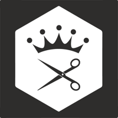
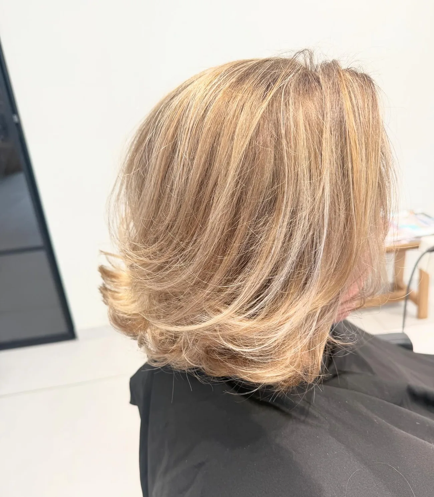
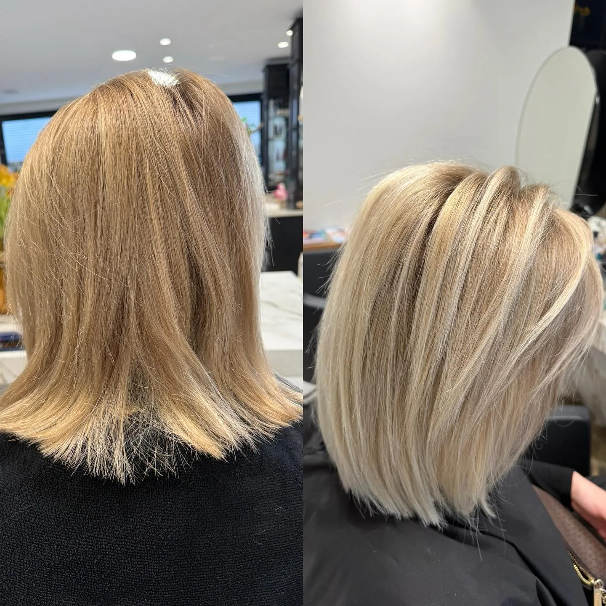
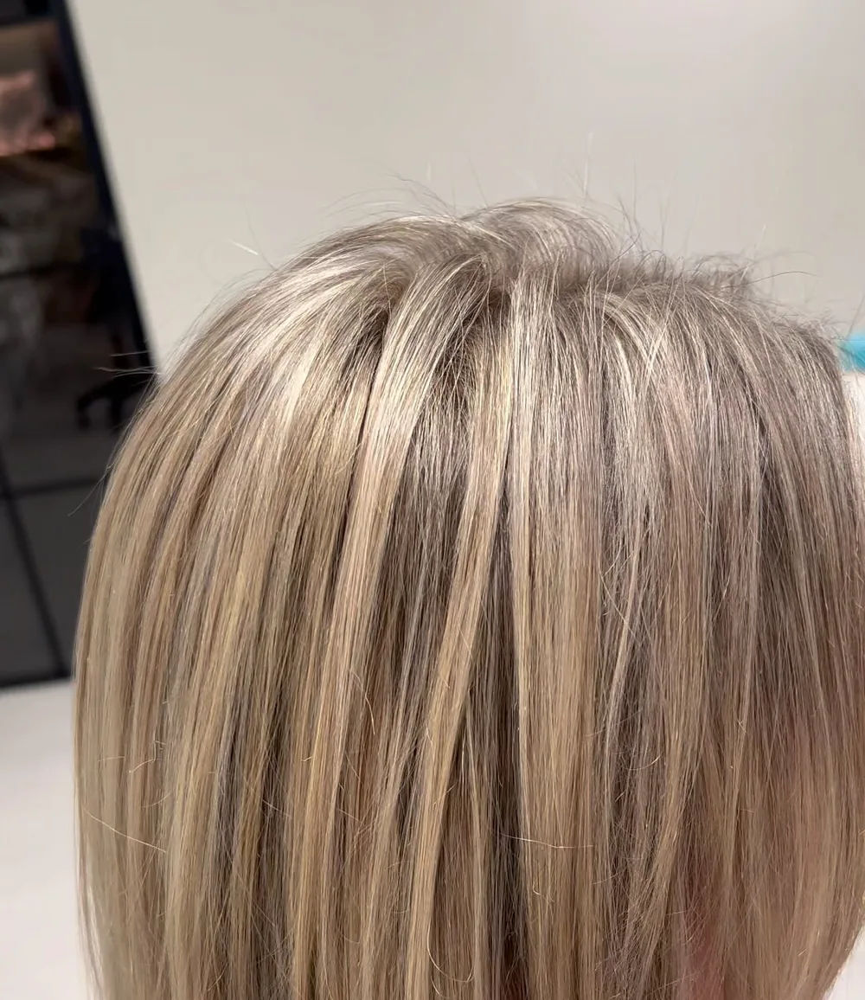
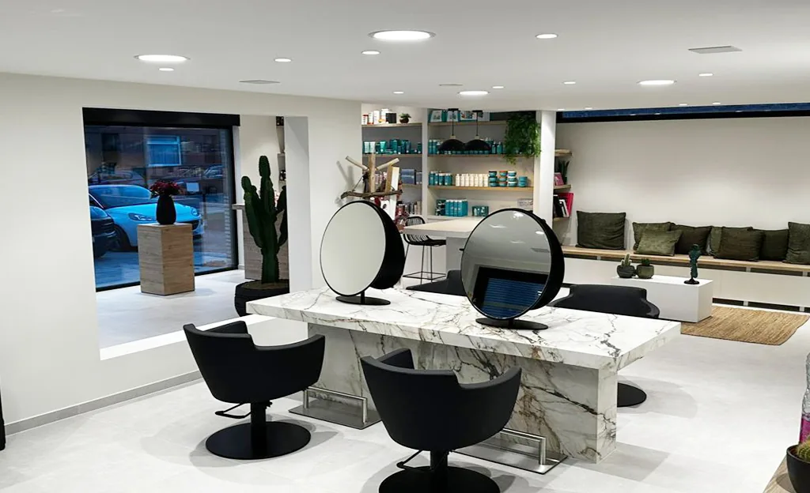
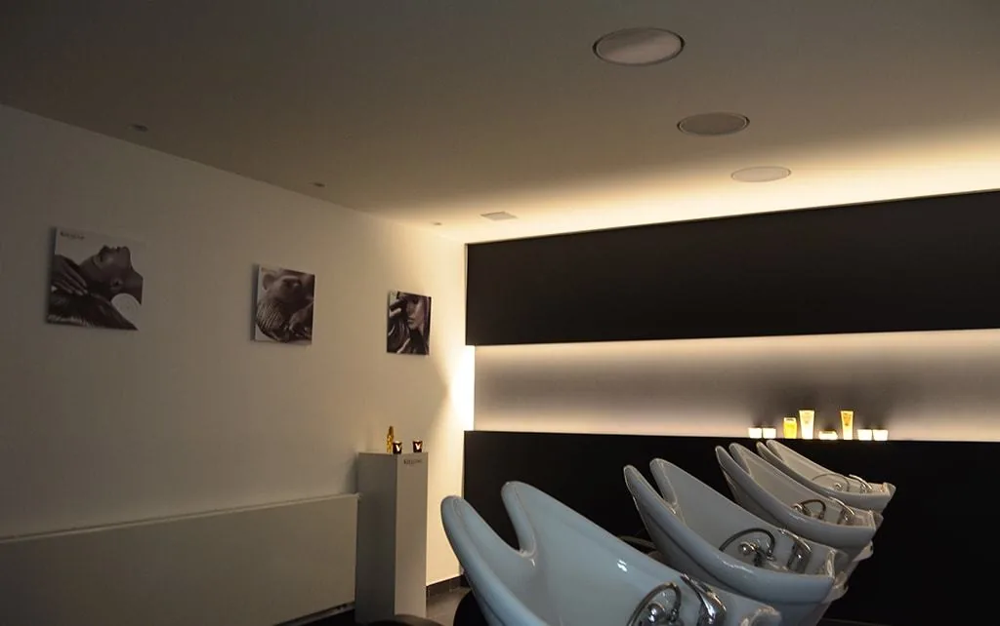
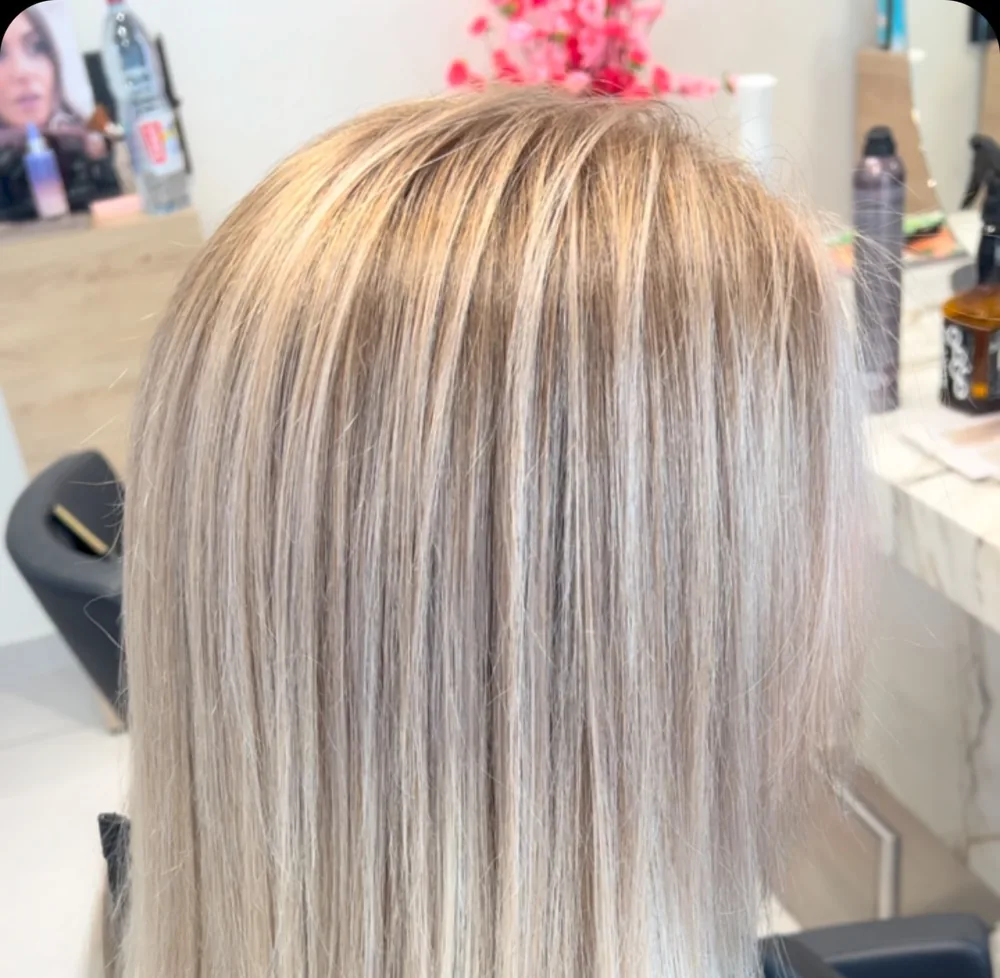
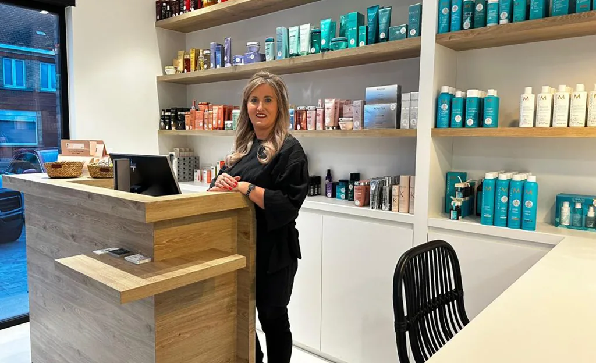
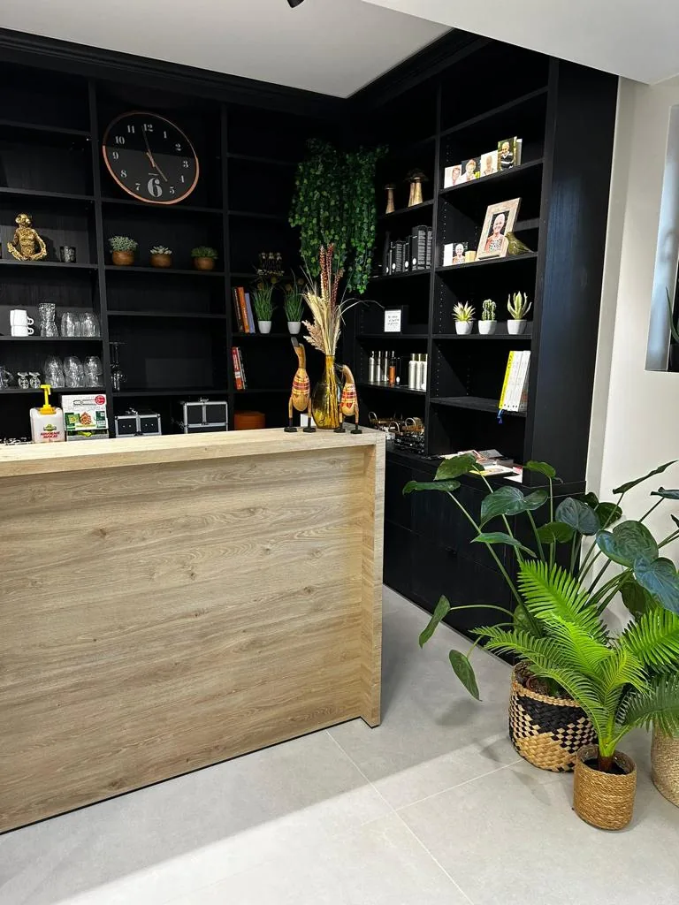
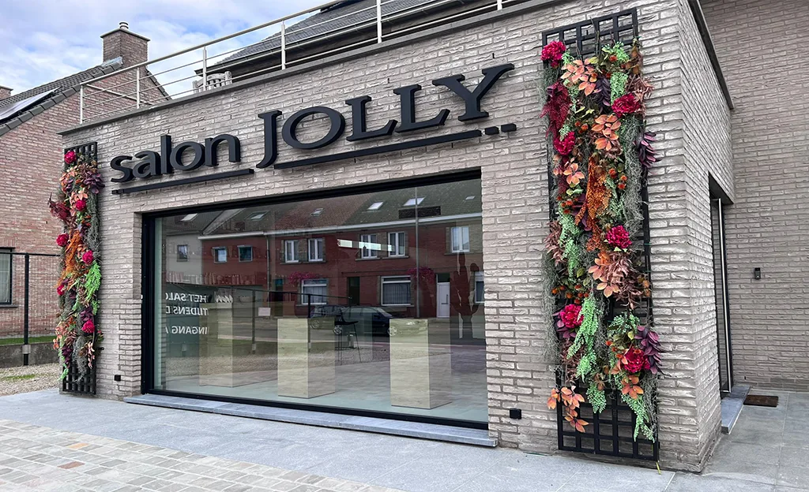

JOLLYKapsalon Boek onlineBlond dat mooi uitgroeit
Lyncey is gecertificeerd kleurspecialist. Met babylights en de teasy techniek krijg je een zachte overgang, zonder harde uitgroei. En je haar blijft langer mooi.
uit 16 Google-reviews


Zacht, natuurlijk, stralend
Babylights vragen vier tot vijf uur geduld. Daar krijg je een kleur voor terug die zacht uitgroeit, in plaats van die harde lijn na een paar weken.






Twijfel je over je kleur? Je krijgt eerlijk advies.
Maak een afspraak16 reviews op Google. Goed luisteren en eerlijk advies, dat lees je er telkens in terug.
"Fantastisch kapsalon waar je een leuke me-time krijgt. Kennen hun vak als geen ander."
"Super goede service, luisteren echt naar wat je wil, geven veel tips en suggesties, met dan ook een fantastisch resultaat."
"Mij uit de nood geholpen wegens annulatie van onze vorige kapster. Ontzettend lieve, empathische mensen."
Tijd voor een moment voor jezelf
Boek online wanneer het jou past, of bel even. Lyncey denkt graag met je mee.
